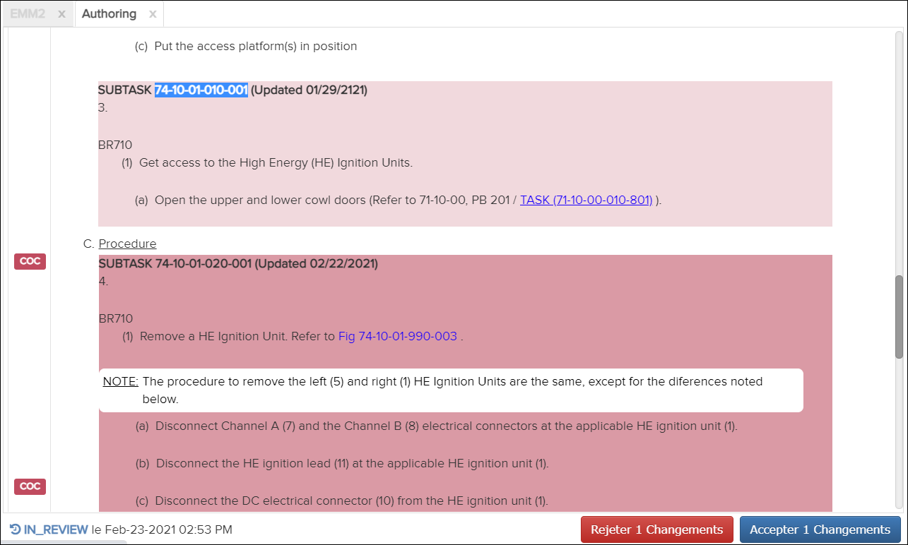

Non applicable pour Pinpoint Standalone Light.
Pour examiner les modifications, procédez comme suit:-
Cliquez dans la colonne
 la plus à droite du document que vous souhaitez consulter.
Le document sélectionné s'ouvre dans le volet Contenu. Dans cet exemple, la section rose foncé montre le nouveau contenu à examiner, tandis que la section rose clair est un contenu approuvé préexistant:
la plus à droite du document que vous souhaitez consulter.
Le document sélectionné s'ouvre dans le volet Contenu. Dans cet exemple, la section rose foncé montre le nouveau contenu à examiner, tandis que la section rose clair est un contenu approuvé préexistant:
Onglet Création - Revoir le contenu
Remarque : Le nombre qui s'affiche sur les boutons Rejeter Changements et Accepter Changements indique le nombre de sections, figures ou feuilles modifiées.